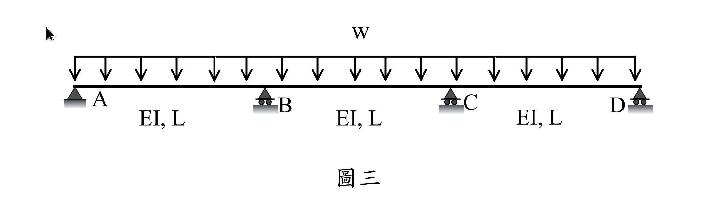
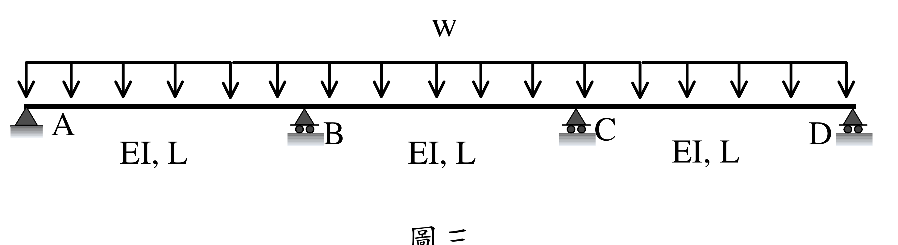
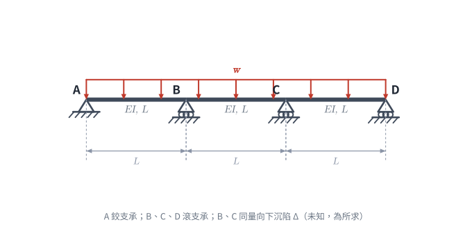
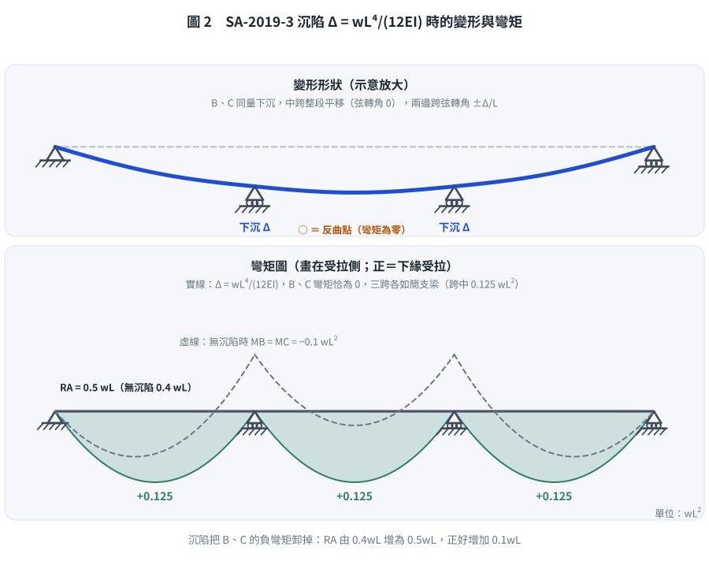

📄 題目正本（考卷原文、附圖與判讀清單；不含解法）
SA-2019-3 題目正本
本檔只記錄考卷上寫了什麼、圖上畫了什麼，不含任何解法。解析見同資料夾
SA-2019-3.md。
判讀清單經使用者確認前，狀態為「待確認」；確認後本檔原則上不再修改（改動須回考卷原圖並記 log）。
| 項目 | 內容 |
|---|---|
| 考卷 | raw/exams/SA-2019_結構學.pdf，第 2 頁下半，第三題（圖三） |
| 考年 | 2019（民國 108 年）專技高考結構工程技師「結構學」 |
| 配分 | 25 分 |
| 附圖 | SA-2019-3-fig-1.png、SA-2019-3-fig-2.png |
| 判讀狀態 | 已確認（2026-11-07 使用者確認。原轉錄：2026-11-05 轉錄；PyMuPDF 110 dpi 整頁＋400–500 dpi 局部放大；盲讀於開啟解析前完成） |
1. 考卷原文（逐字）
三、如圖三所示受均布載重 w 之三跨連續梁，考慮支承 B 及支承 C 都向下沉陷，且沉陷量相同。當沉陷量增加時，支承 A 及 D 垂直反力會增加，而支承 B 及 C 垂直反力會減少。試問當沉陷量為多少時，支承 A 垂直反力會增加 0.1 wL？試以傾角變位法求解。以其他方法作答者一律不予以計分。（25 分）
2. 考卷給的公式、附表與參數
- 考卷沒有給任何參考公式或附表。
- 沉陷量以 w、L、EI 表示（題目未給數值）。
- 卷首注意事項：㈠可以使用電子計算器。㈡不必抄題，作答時請將試題題號及答案依照順序寫在試卷上，於本試題上作答者，不予計分。㈢本科目除專門名詞或數理公式外，應使用本國文字作答。
- 考試時間：2 小時。
3. 附圖

證據圖 SA-2019-3-fig-1.png

證據圖 SA-2019-3-fig-2.png（2026-11-05 自考卷重新擷取 500 dpi，無游標）
圖面文字照錄：w、A、B、C、D、EI, L、EI, L、EI, L、圖三
4. 判讀清單
| # | 項目 | 判讀 | 圖上／題文依據 | 把握 |
|---|---|---|---|---|
| 1 | A | 鉸支承 | 三角形、無滾輪（500 dpi） | 確定 |
| 2 | B、C、D | 滾支承 | 三角形下有兩個滾輪 | 確定 |
| 3 | 跨長與剛度 | 三跨各長 L、EI 相同 | 每跨標 EI, L | 確定 |
| 4 | 載重 | 均布 w 向下，A 至 D 全長 | 箭頭範圍 A 至 D；題文 | 確定 |
| 5 | 沉陷 | B、C 同量向下沉陷 Δ（未知，為所求） | 題文 | 確定 |
| 6 | 所求 | 使 A 垂直反力增加 0.1wL 的沉陷量 | 題文 | 確定 |
| 7 | 指定方法 | 傾角變位法（他法不計分） | 題文 | 確定 |
| 8 | 證據圖 | 舊 fig-1 左上角有滑鼠游標；新增 fig-2（500 dpi） | — | 確定 |
轉錄：2026-11-05（SA-U2-3 題目正本推廣・批 2）
確認：2026-11-07 使用者確認
考題編號：SA-2019-3
主分類： SA-U2-3 靜不定結構之傾角變位法
副分類： 無
標籤： 傾角變位法 連續梁 支承沉陷 對稱性
1. 題目（考卷原文見題目正本）
考卷原文、公式／附表、附圖與判讀清單（已確認）見
SA-2019-3-problem.md。本節只列解題時最容易讀錯的地方與本解使用的記號；題意以題目正本為準。

重繪自考卷附圖，依判讀清單 #1–#8 重繪。攔：只讓一個支承沉陷。
常見誤讀
| 項目 | 正確判讀 | 常見誤讀 |
|---|---|---|
| 沉陷 | B、C 同量向下沉陷 $\Delta$（未知，為所求） | 只有 B 或只有 C |
| 所求 | 使 A 垂直反力增加 $0.1wL$ 的 $\Delta$ | 使 A 反力等於 $0.1wL$ |
本解記號： 記號與正負號約定沿用 §4。
2. 考題核心精神與出題者意圖 (Core Concepts & Examiner's Intent)
本題旨在測驗考生對於傾角變位法 (Slope Deflection Method) 處理支承沉陷問題的熟練度。
透過對稱結構與對稱沉陷的特性，可以將未知數大幅度減少。考題並未要求算出絕對的反力，而是探討「沉陷引起的反力增量」，因此考生只需專注於沉陷量 $\Delta$ 與載重 $w$ 對於 A 點反力的影響，並建立等式求解 $\Delta$。強制規定只能用傾角變位法，測驗基本功。
3. 解題戰略地圖與陷阱分析 (Strategic Roadmap & Trap Analysis)
- 利用對稱性簡化：
- 結構與載重均對稱，且 B、C 沉陷量 $\Delta$ 相同。
- 變位對稱性：$\theta_D = -\theta_A$, $\theta_C = -\theta_B$。
- 由於 A、D 為鉸支承/滾支承，可使用修正勁度法，進一步消去 $\theta_A, \theta_D$ 變數，最終只需解 $\theta_B$。
- 計算弦轉角 (Chord Rotation)：
- 定義向下為位移負向（依傾角變位法慣例，順時針弦轉角為正）。
- AB跨：A(0) 到 B($-\Delta$)，弦轉角為順時針，$\rho_{AB} = \Delta / L$。
- BC跨：B($-\Delta$) 到 C($-\Delta$)，弦轉角 $\rho_{BC} = 0$。
- 建立平衡方程式：
- 寫出 $M_{BA}$ (修正式) 與 $M_{BC}$。
- 節點 B 彎矩平衡：$M_{BA} + M_{BC} = 0$，解出 $\theta_B$ (以 $\Delta$ 及 $w$ 表示)。
- 計算反力增量：
- 由 $\sum M_B = 0$ (取 AB 桿件自由體圖) 求 A 點反力 $R_A$。
- 分離出 $R_A$ 中含有 $\Delta$ 的項，即為沉陷引起的反力增量 $\Delta R_A$。
- 令 $\Delta R_A = 0.1wL$，解得 $\Delta$。
[!TIP] 陷阱警告
弦轉角符號判斷：傾角變位法中，弦轉角 $\rho = \Delta / L$ 順時針為正。若 B 點下沉，AB 桿件相對連線為順時針旋轉，故 $\rho_{AB} = +\Delta / L$。符號若寫錯，會導致反力變化方向相反而算不出合理答案。
4. 步驟化詳細計算過程 (Step-by-Step Detailed Calculation)
Step 1：定義變位與弦轉角
- 設向下沉陷為 $\Delta$。各支承位移：$\Delta_A = 0, \Delta_B = \Delta (\downarrow), \Delta_C = \Delta (\downarrow), \Delta_D = 0$。
-
計算各跨弦轉角 (順時針為正)：
$\rho_{AB} = \frac{\Delta}{L}$
$\rho_{BC} = \frac{\Delta - \Delta}{L} = 0$ -
由於對稱性：$\theta_C = -\theta_B$。
Step 2：建立桿端彎矩方程式 (傾角變位法)
固端彎矩 (FEM)：
$FEM_{AB} = -\frac{wL^2}{12}, \quad FEM_{BA} = \frac{wL^2}{12}$
$FEM_{BC} = -\frac{wL^2}{12}, \quad FEM_{CB} = \frac{wL^2}{12}$
A 端為鉸支承 ($M_A=0$)，對 AB 桿使用修正勁度：
$$M_{BA} = \frac{3EI}{L}(\theta_B - \rho_{AB}) + \left(FEM_{BA} - \frac{1}{2}FEM_{AB}\right)$$
$$M_{BA} = \frac{3EI}{L}\left(\theta_B - \frac{\Delta}{L}\right) + \left(\frac{wL^2}{12} + \frac{wL^2}{24}\right) = \frac{3EI}{L}\theta_B - \frac{3EI\Delta}{L^2} + \frac{wL^2}{8}$$
對 BC 桿使用標準式，並代入對稱條件 $\theta_C = -\theta_B, \rho_{BC} = 0$：
$$M_{BC} = \frac{2EI}{L}(2\theta_B + \theta_C - 3\rho_{BC}) + FEM_{BC}$$
$$M_{BC} = \frac{2EI}{L}(2\theta_B - \theta_B) - \frac{wL^2}{12} = \frac{2EI}{L}\theta_B - \frac{wL^2}{12}$$
Step 3：節點平衡與求解 $\theta_B$
節點 B 彎矩平衡：$\sum M_B = 0 \Rightarrow M_{BA} + M_{BC} = 0$
$$\left(\frac{3EI}{L}\theta_B - \frac{3EI\Delta}{L^2} + \frac{wL^2}{8}\right) + \left(\frac{2EI}{L}\theta_B - \frac{wL^2}{12}\right) = 0$$
$$\frac{5EI}{L}\theta_B - \frac{3EI\Delta}{L^2} + \frac{wL^2}{24} = 0 \implies \theta_B = \frac{3\Delta}{5L} - \frac{wL^3}{120EI}$$
Step 4：計算 A 點反力增量並求解沉陷量
將 $\theta_B$ 代回 $M_{BA}$：
$$M_{BA} = \frac{3EI}{L}\left(\frac{3\Delta}{5L} - \frac{wL^3}{120EI}\right) - \frac{3EI\Delta}{L^2} + \frac{wL^2}{8} = \frac{9EI\Delta}{5L^2} - \frac{wL^2}{40} - \frac{3EI\Delta}{L^2} + \frac{wL^2}{8}$$
$$M_{BA} = -\frac{6EI\Delta}{5L^2} + \frac{wL^2}{10}$$
取 AB 桿件為自由體，對 B 點取彎矩平衡 ($\sum M_B = 0$)：
$$R_A \times L + M_{BA} - \frac{wL^2}{2} = 0 \implies R_A = \frac{wL}{2} - \frac{M_{BA}}{L}$$
將 $M_{BA}$ 代入：
$$R_A = \frac{wL}{2} - \frac{1}{L}\left(-\frac{6EI\Delta}{5L^2} + \frac{wL^2}{10}\right) = \left(\frac{wL}{2} - \frac{wL}{10}\right) + \frac{6EI\Delta}{5L^3} = 0.4wL + \frac{6EI\Delta}{5L^3}$$
由此可知，沉陷 $\Delta$ 造成的 A 點垂直反力增量為：
$$\Delta R_A = \frac{6EI\Delta}{5L^3}$$
依題意，反力增加 $0.1wL$：
$$\frac{6EI\Delta}{5L^3} = 0.1wL \implies \Delta = \frac{0.1wL \times 5L^3}{6EI} = \frac{wL^4}{12EI}$$
答：當沉陷量為 $\frac{wL^4}{12EI}$ 時，支承 A 垂直反力會增加 0.1 wL。

圖 2 沉陷量為 $wL^4/(12EI)$ 時的變形與彎矩（$L = w = EI = 1$ 勁度法重解；虛線為無沉陷）。代回本解可得 $M_{BA} = -\tfrac{6}{5}\cdot\tfrac{wL^2}{12} + \tfrac{wL^2}{10} = 0$：B、C 的負彎矩恰好被卸掉，三跨各如簡支梁，$R_A = wL/2$。這張圖攔的是沉陷方向或弦轉角正負寫反（那樣 $R_A$ 會變小、B 的負彎矩反而加大）。
5. 關鍵爭議點與進階探討 (Critical Issues & Advanced Discussion)
本題若不利用對稱性，而將 $\theta_A, \theta_D$ 皆設為未知數並用標準式聯立，將會面對 $3 \times 3$ 的矩陣方程，極易在代數運算中出錯。修正勁度法與對稱性是此類考題的標準破題法。
修正日期：2026-11-07（§1 改為指向題目正本並放重繪附圖（figs/SA-2019-3-fig-1-problem.svg）、加常見誤讀；圖由 gen_SA-2019-3.py 產生，可重跑）
修正日期：2026-11-08（圖解補繪：§4 Step 4 後補圖 2（沉陷後變形＋彎矩，與無沉陷對照）；數值由勁度法重解並以 assert 對照本解正本，腳本 gen_SA-2019-3.py，可重跑）